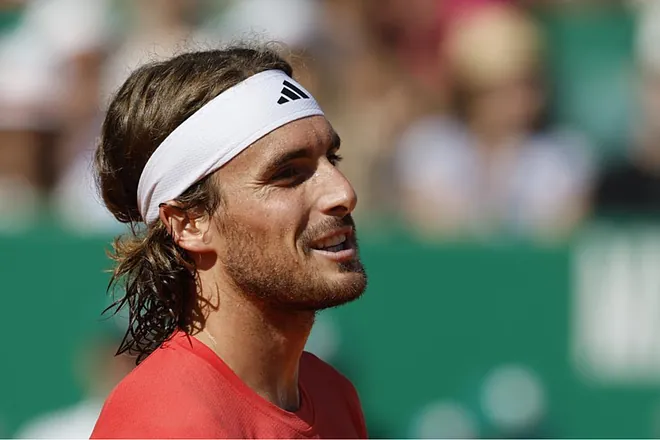
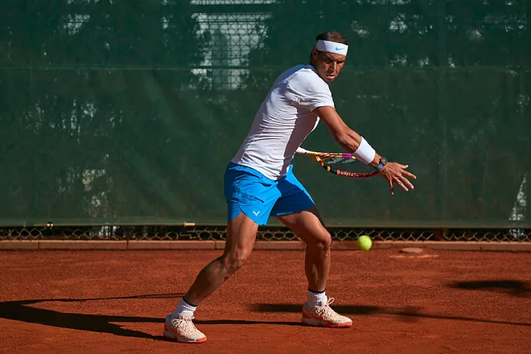
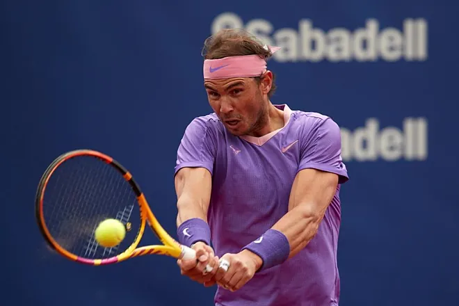
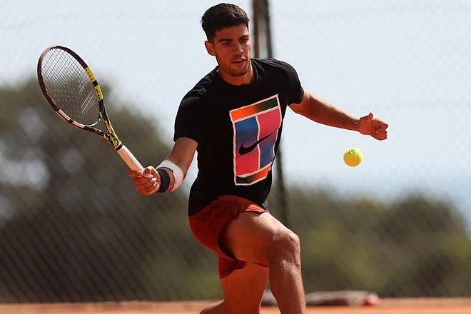

inicio
Tsitsipas: "Nadal es el último desafío en tierra batida"
El griego, tras ganar el Masters 1000 de Montecarlo, analizó el
regreso del balear en el Barcelona Open Banc Sabadell,
torneo en el que se vieron las caras por última vez en la final de 2021

Rafa Nadal regresa por decimoctava vez... ¿y última?
El balear, que volverá a jugar un partido en tierra 681 días después
ha ganado 16 de los 17 compromisos tras una larga lesión

Conde Godó 2024: fechas, horarios, TV y dónde ver el Open de Barcelona
en directo
El torneo de tierra batida coronará a un campeón diferente al de los
dos últimos años para la baja de Carlos Alcaraz

Carlos Alcaraz vuelve a los entrenamientos vendado antes
del test definitivo del viernes
El murciano realizó diferentes ejercicios con cestas sin forzar
la derecha y haciendo hincapié en el físico
